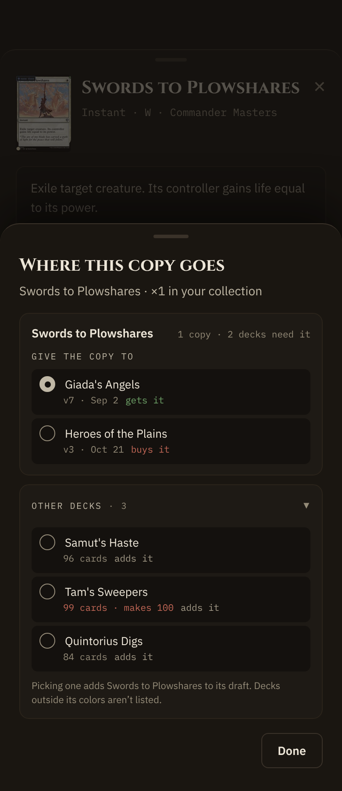
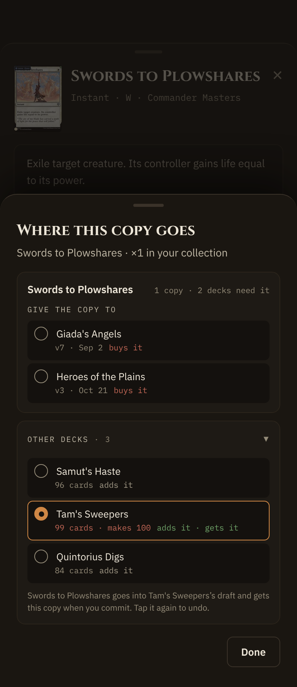
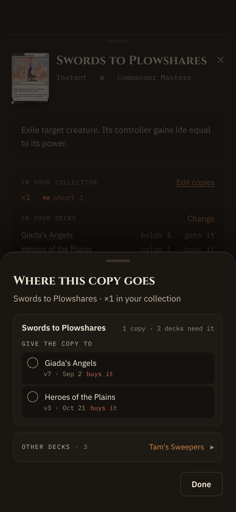
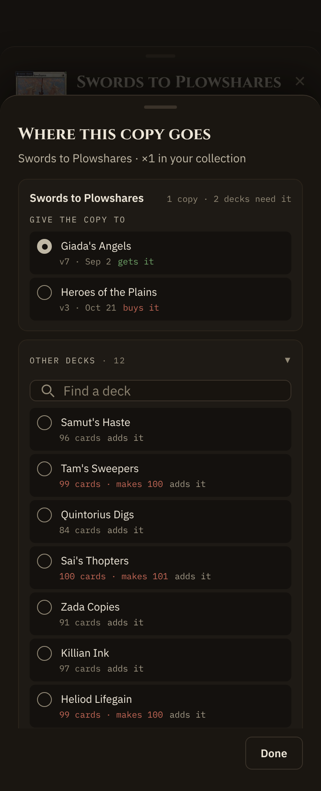
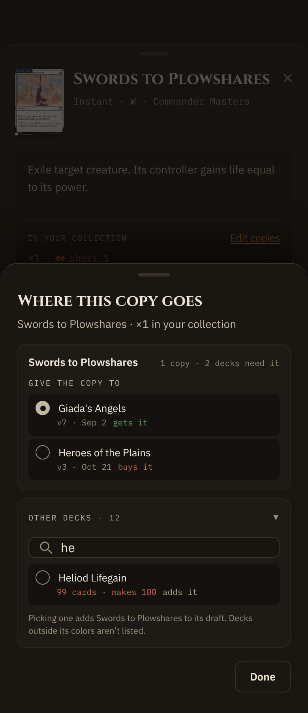

O · other decks · 390
One disclosure row under the shipped chooser row. Open, its rows are the same options as above. Decks outside the card’s colors are never listed; decks at 99 or more are.
O1 · open

Each deck shows its card count and adds it. Tam’s Sweepers at 99 stays an option and says makes 100. The foot line says what a pick does and that decks outside its colors aren’t listed.
O2 · picked

Same tap as above: accent row, adds it · gets it, and both listing decks now buy it. It goes into the draft and gets the copy on commit. Tap again to undo.
O3 · closed with a pick

Closed again, the header names the pick in accent, so the choice is never hidden.
F1 · many decks

Past 6 decks, a Find a deck field (the shipped SearchField) tops the list. The list scrolls inside the chooser; the title and Done stay put.
F2 · found

Typing narrows it by name. A pick stays picked while it is filtered out.